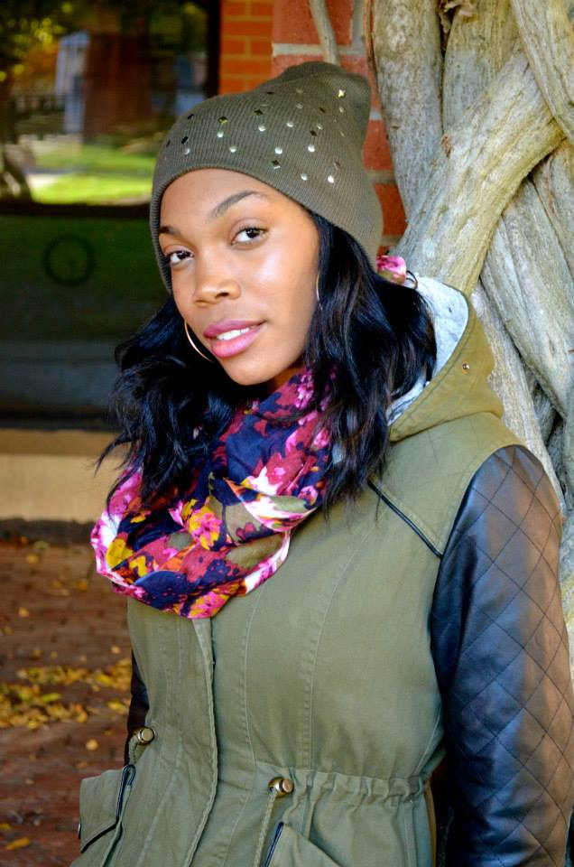
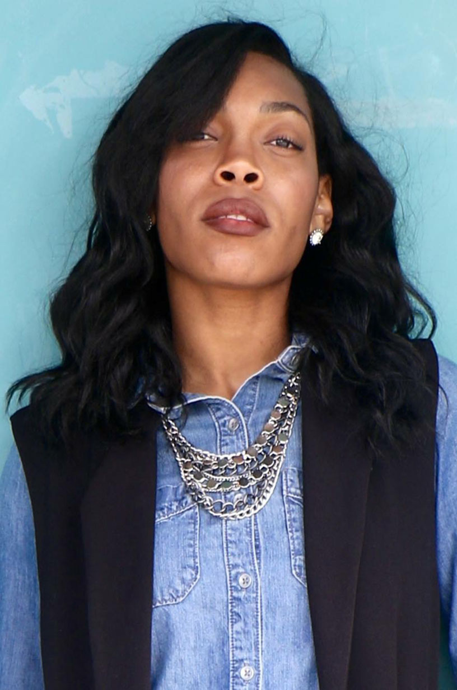
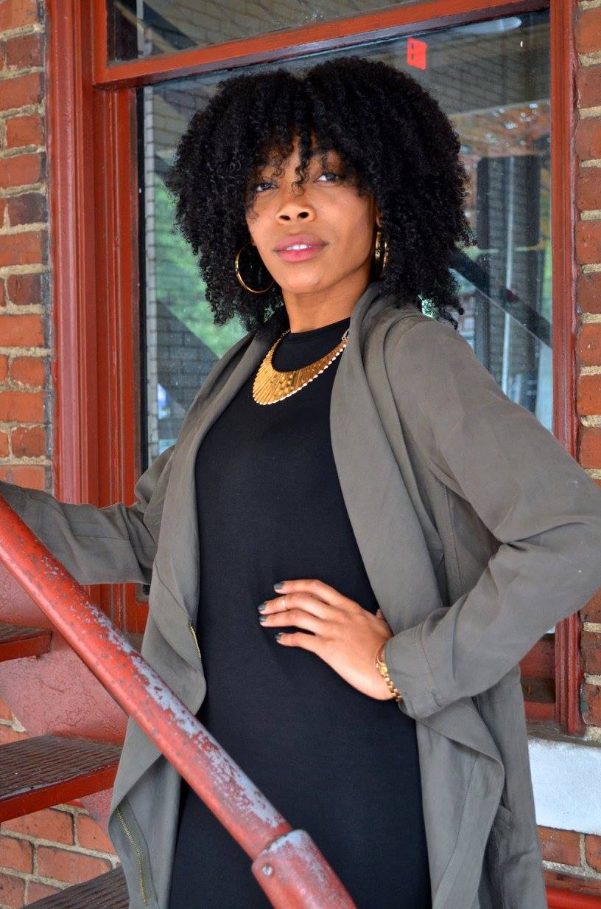

Welcome to the land of Kay. I'm a dancer, fashionista, and naturalista all-in-one. I talk about my dance experiences and share some of my favorite fashion finds and beauty products on my blog. You can find out where I'm teaching next on my Dancing Queen page, and find out more about me and why I created this site on the About Me page. Well what are you waiting for? Go ahead and explore!
- DANCER - |
- FASHIONISTA - |
- NATURALISTA - |
|---|---|---|
|  |  |  |
|
I'm a semi-professional dancer from New Jersey, but in recent years, the North Carolina dance community has become my family. I think of myself as a student first, so I'm always training and perfecting my craft. My dream is to dance on tour for a major recording artist. I'm on the path to making this dream come true, and I'm excited for the journey. Hear about some of my dance experiences on the Dance is Life page of my blog, and find out where I'll be teaching next on the Dancing Queen page. |
I love fashion, and I would consider myself a bit of a fashionista. I enjoy putting pieces together to create my own unique style which I would characterize as classic chic with a splash of trendy. As a graduate student, I'm on a tight budget, but I like to look my best no matter what the occasion. Finding fashionable clothing at reasonable prices is my mission, so I'm always on the hunt for a great bargain. Trust me, you can be fashionable without breaking the bank. Browse my latest fashion finds on the Classic Chic page of my blog. |
I call myself a naturalista because I'm obsessed with all things natural. From natural hair, to organic food, to natural cleaning products. I've even been known to dabble in all-natural DIY skincare products. I want to make sure the products I'm using on my hair and skin are not harmful to my body. I always check the ingredient labels to see what's really inside these magic potions and lotions. Check out some of my favorite all natural beauty and household cleaning products on the Au Natural page of my blog. |